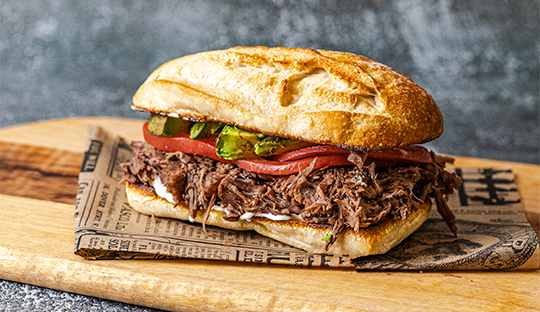

Italian Mechada Sandwich

The Italian Mechada sandwich features tender rib meat braised in a flavorful mix of white wine and a rich beef base. After cooking to perfection in a pressure cooker, the meat is shredded and served on toasted bread with creamy avocado, fresh tomato slices, and a touch of mayonnaise.
This hearty sandwich offers a perfect balance of savory shredded beef and fresh toppings, making it a satisfying and classic Chilean dish.
Ingredients
- 45 gr of vegetable oil
- 1 kg of rib meat
- 1 Tablespoon of Gourmet ground beef base
- 375 ml cold water
- 125 ml white wine
Steps
For the base for carne mechada
- Add 3 tablespoons (45g) of vegetable oil to a pot over high heat. Once the oil is hot, add 1kg of rib eye meat, brown until sealed on all sides.
- Dissolve the sachet (45g) in 375ml of cold water (approx. 1 ½ cup) and 125ml of white wine (approx. 1/2 cup). Pour the prepared Gourmet Shredded Beef Base into the pot with the meat and mix well.
- Cook over low heat for 1 ½ hours in a pressure cooker or 2 ½ hours in a conventional pot.
- Once the meat is tender, cut into slices or shred. Once ready, serve immediately.
For the sandwich
- Cut the bread and brown it with butter in a frying pan.
- Then serve the shredded meat with avocado, tomato, and mayonnaise.